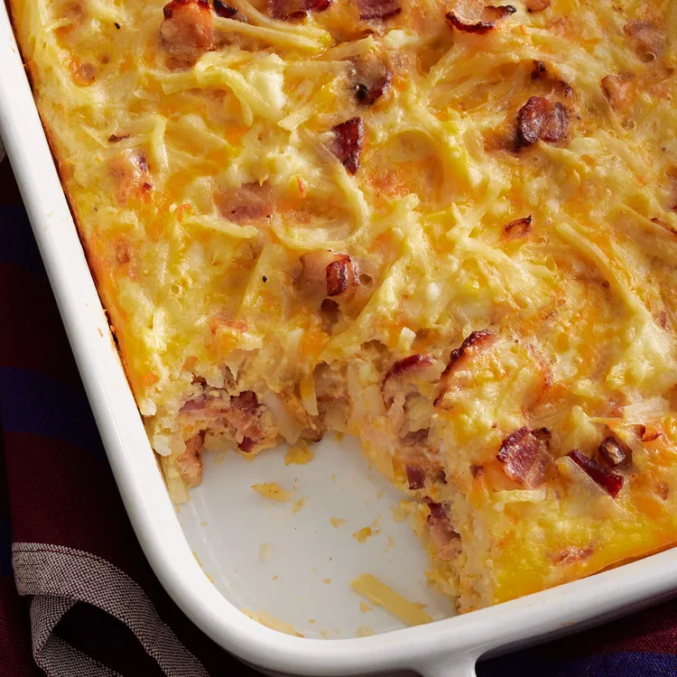

Strawberry Spinach Salad

Description
This crowd-pleasing Amish breakfast casserole recipe is not only hearty and filling,
it's made with budget-friendly ingredients you may already have on hand.
Ingredients
- 1 pound sliced bacon, diced
- 1 medium sweet onion, chopped
- 9 large eggs, lightly beaten
- 4 cups frozen shredded hash brown potatoes, thawed
- 2 cups shredded Cheddar cheese
- 1 ½ cups small curd cottage cheese
- 1 ¼ cups shredded Swiss cheese
Steps
- Preheat the oven to 350 degrees F (175 degrees C). Grease a 9x13-inch baking dish.
- Heat a large skillet over medium-high heat;
cook and stir bacon and onion until bacon is evenly browned, about 10 minutes. Drain.
- Transfer bacon and onion to a large bowl.
Stir in eggs, potatoes, Cheddar cheese, cottage cheese, and Swiss cheese.
Pour mixture into the prepared baking dish.
- Bake in the preheated oven until eggs are set and cheese is melted, 45 to 50 minutes.
Let stand 10 minutes before cutting and serving.